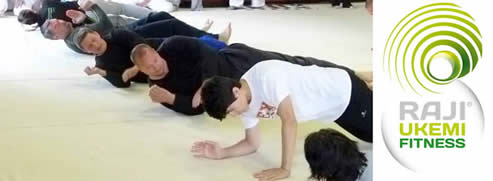
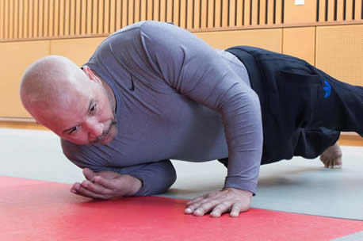
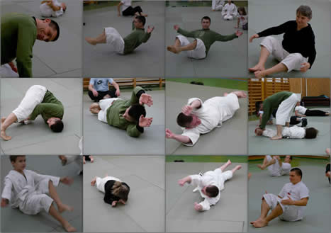
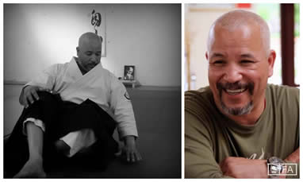
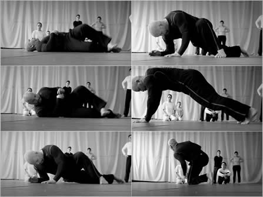
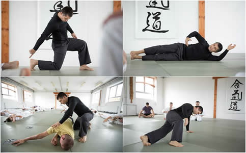
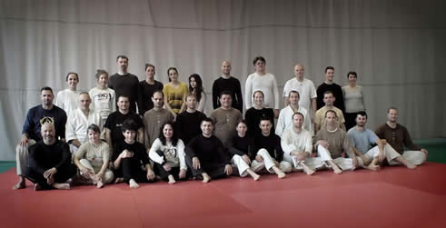

RAJI UKEMI FITNESS©
 "A 21. század új mozgásformája"A RAJI UKEMI FITNESS olyan új mozgás-, illetve edzésforma, amely egyszerre hagyományõrzõ és modern. Az évszázados hagyományok, évezredes tapasztalatok és az évmilliós evolúció, valamint a szabad, kreatív elme és test friss megjelenési formája. A RAJI UKEMI FITNESS alapja, az emberi test és a föld kapcsolta. A földnek, úgy is, mint talajnak, és úgy is mint erõhatást, gravitációt kifejtõ hatalmas (égi)testnek, valamint az embernek, mint a földhöz tartozó ("földhöz ragadt”), mégis szabad mozgással rendelkezõ, önállóan gondolkodó lénynek a dinamikus együttmûködése. A RAJI UKEMI FITNESS az egyedi mozgásformákon keresztül fejleszti és formálja mind a testet, mind pedig az azt irányító elmét; gyakorlása során a Test-Szív-Elme hármasság harmonikus egységet alkot.  A gyakorlatok szinte kivétel nélkül a gravitációnak való megadással, vagyis a föld vonzó erejének befogadásával, átvételével (ukemi) indulnak. Ennek megfelelõen az alapvetõ mozgásformák a gördülések, forgások és a gurulások, amelyek a gravitációs erõ "visszaforgatásával” plusz energiát, illetve lendületet biztosítanak a gyakorlatok további erõsítõ-nyújtó részeihez: a fölállásokhoz, fölülésekhez, tolódzkodásokhoz, illetve a nyújtó mozdulatokhoz. A különbözõ összetettségû gyakorlatokban gyakran párhuzamosan történik a test megerõsítése és hajlékonyabbá tétele, a figyelem, a koordináció és az egyensúly fejlesztése. Mozgás közben a test majd minden része konkrét fizikai kapcsolatba kerül a talajjal, ami a hétköznapi mozdulatainkban ritkán, vagy soha nem tapasztalt impulzusokat ad a bõrfelületnek, az izomzatnak és a csontoknak, ízületeknek egyaránt. Természetesen nagy hangsúlyt kap a mozdulatoknak megfelelõ légzés is.  Amire számíthatunk : * * *
Rövid interjú Jaff Rajival, az új edzésforma létrehozójával Jaff, miért fejlesztette ki ezt a módszert, amelyben a gyakorló partner tulajdonképpen maga a föld ?
Hosszú évek Aikido oktatása során a saját magam és a tanítványaim testén kísérletezve tapasztaltam ezeknek a mozdulatoknak a jótékony hatásait. A saját és a tanítványaim folyamatos pozitív visszajelzései meggyõztek arról, hogy mennyire fontos ezt a módszert, amelyet RAJI UKEMI FITNESSnek neveztem el, mindenki számára elérhetõvé tenni.
Köztudott, hogy az emberi lény fogantatásától kezdve képes vízben mozogni, még ha csak egy igen leszûkített térben is. A születés után, pedig arra kényszerül, hogy önállóan lélegezzen. Hamar meg kell találnia a gravitációs központját, hogy mozgása szabaddá váljon, hiszen a rugalmas közeg, vagyis a magzatvíz, amely korábban körbevette, már nincs jelen. A bõrrel rugalmasan érintkezõ határok eltûnésével, és a teste növekedésével, fokozatosan elfelejti azt az érintést, amely számtalan információval és a jólét határtalan érzésével látta el.
A RAJI UKEMI FITNESS a test, gördülések és gurulások segítségével való újra birtokba vételérõl szól. A gyakorlás során újra felfedezhetünk számos elveszettnek hitt belsõ és külsõ érzetet. A gyakorlatokkal tudatosan fejlesztjük a mozdulatok, a hatékonyság, a hajlékonyság és a légzés minõségét. Pontosan úgy mint egy testmasszázs során, minden (az egyszerre szilárd és rugalmas) tatamival érintkezõ testfelület és testrész stimulálódik. A körülöttünk lévõ ûr újra megtelik és egy állandó, közvetlen érintkezés élményét adja, amely egyensúlyt és önbizalmat teremt számunkra.
Próbálják ki a RAJI UKEMI FITTNESS-t, és megértik!  * * * Az elnevezésrõl:
RAJI - Jaff Raji családneve. Jaff 1960-ban született Casablancán. Kora gyermekkorától Franciaországban nevelkedik és a mai napig Bretagneban él. Fiatalon számtalan sporttal megismerkedik: szertornázik, atletizál, de mindenekelõtt kiemelkedõ tehetségû a kajak illetve a futball területén. Húszévesen felhagy a versenysporttal, és teljes odaadással AIKIDÓt kezd tanulni, majd tanítani. Rendkívüli tehetségének, és teljes elkötelezettségének köszönhetõen, hamarosan hivatásos harcmûvészeti oktatóvá válik. Az AIKIDO mellett más, õsi harcmûvészetet is gyakorol és oktat és több Francia és nemzetközi harcmûvészeti szervezet technikai felelõse. Saját iskolája az Ecole de BUDO RAJI több évtizedes nemzetközi oktatómunka eredményeként 2001ben jön létre. Magyarországon 20 éve vesz részt a japán harcmûvészetek terjesztésében és fejlesztésében. Évente több alkalommal tart szemináriumokat Budapesten és más városokban. Jaff Raji & Gollob Szabolcs 

|
|
| Tenjinchi Dojo | EBR International | Raji Ukemi Fitness | Aikido | Jodo | Iaido | Gyerekcsoport | Órarend | Tanárok Hírek/Események | Fotók / Videók | Olvasnivaló | Linkek |